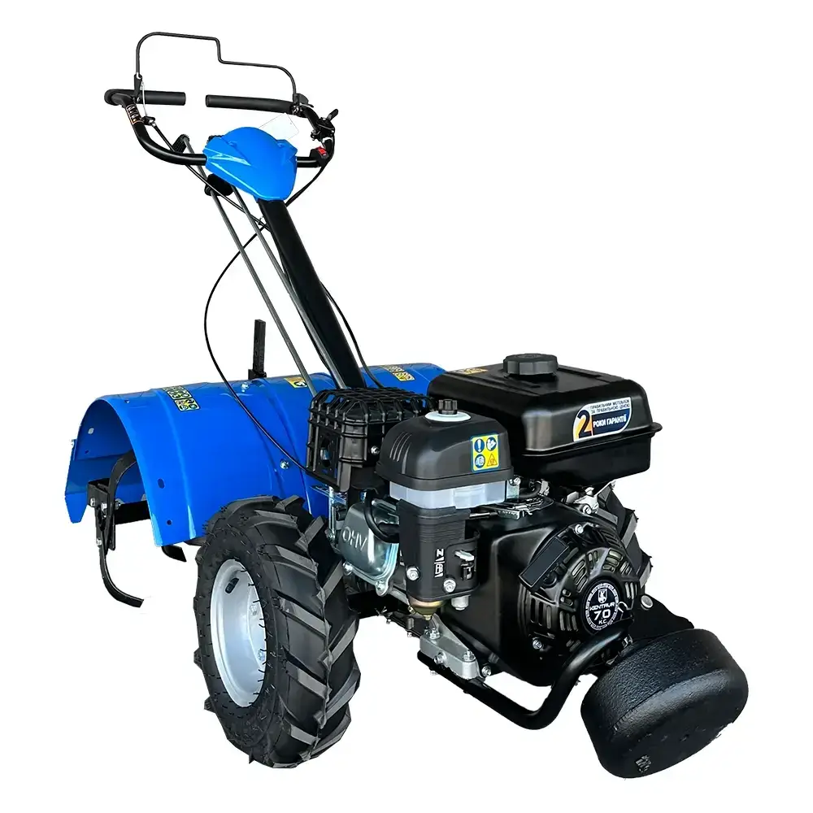
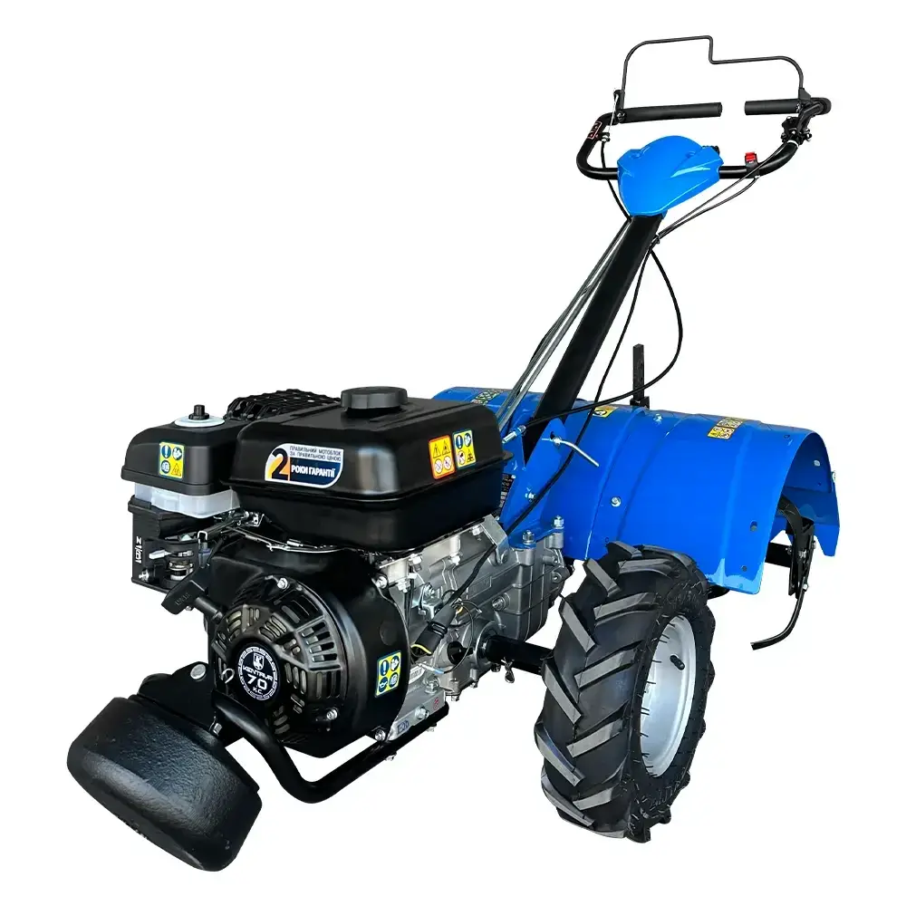
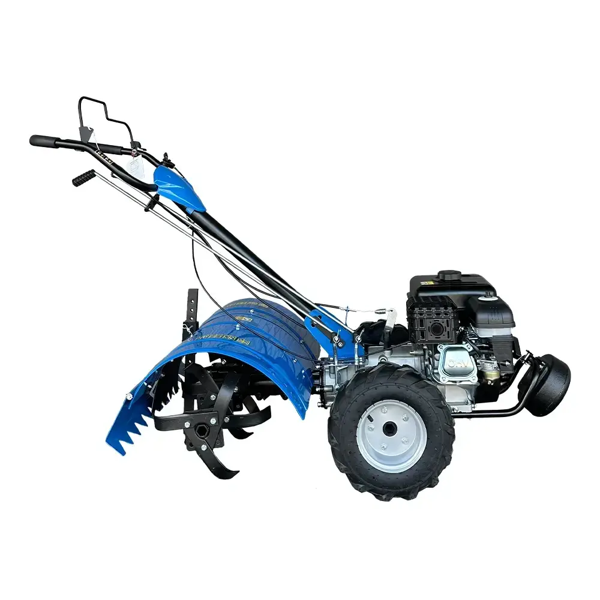
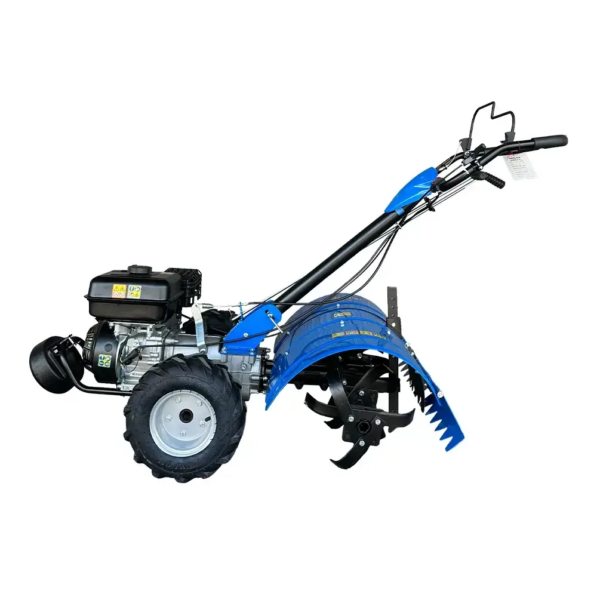

Характеристики:
- Тип двигуна: 4-тактний, бензиновий
- Потужність: 6.5 к.с.
- Ширина обробітку: 85 см
- Глибина обробітку: до 30 см
- Трансмісія: Механічна, 1 передача вперед і 1 назад
- Вага: 55 кг
- Тип коліс: Напівпрофільні
- Обладнання: Дискові фрези, плуги для обробки
- Задня передача: Так, за потреби
- Додаткові пристрої: Можливість підключення різних насадок (борони, сійки тощо)
- Транспортні колеса: Так, для зручності перевезення
- Витрата пального: близько 1.4 л/година
- Система охолодження: Повітряне охолодження
- Запуск: Ручний стартер
- Гарантія: 12 місяців
- Регульована ручка: Так, з можливістю регулювання по висоті
- Матеріал рами: Метал, посилена конструкція
- Обороти двигуна: 3600 об/хв
- Кількість фрез: 6-8 дискових фрез
- Об'єм паливного бака: 3.6 літра
- Габарити упаковки: 95 x 50 x 60 см
- Шум: Шум на рівні 95 дБ
Про товар:
Потужний та універсальний агрегат, ідеальний для виконання різноманітних сільськогосподарських завдань. Завдяки бензиновому 4-тактному двигуну потужністю 6.5 кінських сил, культиватор здатний ефективно обробляти грунт навіть в складних умовах. Його легка і маневрена конструкція забезпечує комфортну роботу в полі, а можливість підключення додаткових насадок робить його відмінним вибором для аграріїв, які потребують надійного та доступного рішення для обробки земель.
Вартість оренди: 500 UAH за день